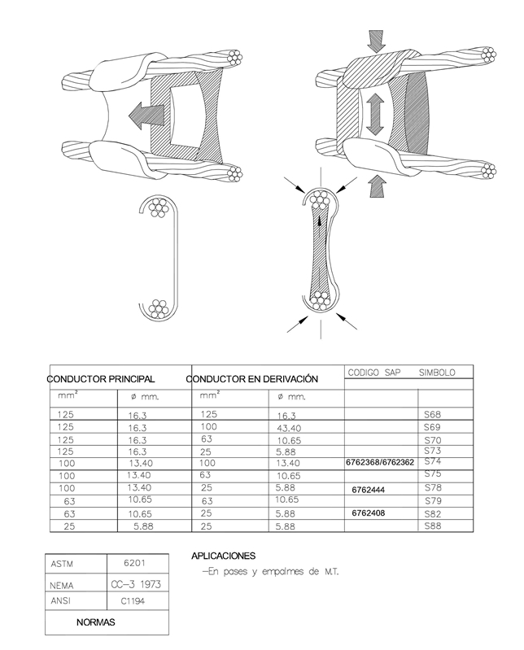

Siempre es más fácil conocer las normas ENEL-CODENSA
Rolex Rolex gold watch, compared with ordinary materials, gold watches are often expensive, but the replica rolex gold watch has the role of swiss replica watches hedging, so that it often becomes the first choice for collectors. The gold watch has value in the world, largely because the omega replica watch brand launched a commemorative limited edition watch or a replica hublot complex movement process or artistic attainments deep watches, mostly preferred gold precious metals such material. These watches tend to have a strong hedging function, therefore, Rolex Rolex gold watch reputation.

ET356 Conectores tipo cuña
Datos adicionales
Número de especificación
ET356
Fecha de vigencia
25/05/2021
Herramientas adicionales
- Contenido Ocultar
- 1. GENERALIDADES
- 1.1. OBJETO DE LA ESPECIFICACIÓN
- 1.2. CONDICIONES DE UTILIZACIÓN
- 1.3. CONDICIONES AMBIENTALES
- 2. SISTEMAS DE UNIDADES
- 3. NORMAS RELACIONADAS
- 4. REQUISITOS
- 4.1. DISEÑO Y CONSTRUCCIÓN
- 4.2. DETALLES
- 4.3. REQUISITOS ADICIONALES
- 4.3.1 Herramienta
- 4.3.2 Marcación
- 4.3.3 Acondicionamiento para la entrega
- 5. ENSAYOS
- 6. METODOLOGÍA DE LOS ENSAYOS
- 6.1. VERIFICACIÓN VISUAL Y DIMENSIONAL
- 6.2. CICLADO TÉRMICO
- 6.3. CORROSIÓN
- 6.4. TRACCIÓN
- 6.5. ANÁLISIS QUÍMICO CUANTITATIVO
- 6.6. ENSAYO DE TENSIÓN DE PERFORACIÓN
- 6.7. ENSAYO DE ENVEJECIMIENTO CLIMÁTICO
- 7. GARANTÍA DE FÁBRICA
- 8. CRITERIOS DE ACEPTACIÓN O RECHAZO
- 9. INFORMACIÓN TÉCNICA A SUMINISTRAR POR EL OFERENTE
- 10. FIGURAS
- 11. CUADRO DE CARACTERÍSTICAS TÉCNICAS GARANTIZADAS
- 11.1. CONECTOR TIPO CUÑA
- 11.2. CARTUCHO
1. GENERALIDADES
1.1. OBJETO DE LA ESPECIFICACIÓN
Establecer las condiciones que deben satisfacer los conectores a presión tipo cuña, para líneas aéreas de MT/BT, tanto para conexiones monometálicas como bimetálicas.La denominación de los tamaños, en función del tipo y calibre de los conductores a conectar, se indica en la figura del numeral 10.
1.2. CONDICIONES DE UTILIZACIÓN
Este tipo de conector es adecuado para utilizarlo en conexiones que se encuentren sometidas a esfuerzos mecánicos o de vibración ya sea por efecto del viento o bien propios de la instalación, tales como: conexión entre redes aéreas y subterráneas y conexión a equipos.Las redes aéreas, sobre las que se instalarán los conectores, están constituidas por cables o conductores que responden a los siguientes calibres:
| # | Global | SAP | Tipo | Norma | Descripción |
| 1 | GSC003.3 | 6762276 | ACSR | ASTM B 232/B 232M | Raven 1/0 AWG |
| 2 | GSC003.4 | 6762335 | ACSR | ASTM B 232/B 232M | Quail 2/0 AWG |
| 3 | GSC003.5 | 6762309 | ACSR | ASTM B 232/B 232M | Penguin 4/0 AWG |
| 4 | GSC003.6 | 6762293 | ACSR | ASTM B 232/B 232M | Partridge 266,8 kcmil |
| # | SAP | Descripción |
| 1 | 6779600 | Cable semiaislado AAAC 100mm2 15 kV |
| 2 | Cable semiaislado AAAC 100mm2 35 kV |
1.3. CONDICIONES AMBIENTALES
La zona de instalación, es generalmente de clima cálido y húmedo.La temperatura podrá presentar cambios dentro de los límites de -5 ºC a 40 ºC.
La humedad relativa ambiente podrá alcanzar valores de saturación.
2. SISTEMAS DE UNIDADES
En todos los documentos técnicos se deben expresar las cantidades numéricas en unidades del sistema Internacional (S.I.). Si se usan catálogos, folletos o planos, en sistemas diferentes de unidades, deben hacerse las conversiones respectivas.3. NORMAS RELACIONADAS
| NORMA | DESCRIPCIÓN |
| ASTM B 117 | Test Method of Salt Spray [Fog] Testing |
| ASTM G26 | Prueba de envejecimiento climático |
| NTC 2244 | Electrotecnia – Conectores para uso entre conductores aéreos de aluminio o aluminio-cobre |
| NCT 5991 | Envases y embalajes. requisitos de los envases y embalajes valorizables mediante compostaje y biodegradación. programa de ensayo y criterios de evaluación para la aceptación final del envase o embalaje |
| ASTM D6400-04 | Standard Specification for Compostable Plastics |
4. REQUISITOS
4.1. DISEÑO Y CONSTRUCCIÓN
El sistema básico se compondrá de dos piezas, una grapa elástica en forma de "C", dentro de la cual se introduce una cuña, quedando entre ambas bloqueados los conductores que van a ser conectados.También está la opción del conector con estribo. El estribo debe suministrarse en cobre estañado y su ubicación debe ser vertical.
Tanto la grapa como la cuña deberán estar impregnadas, en las zonas de contacto con los conductores, con grasa conductora e inhibidora (grasa de contactos) de la corrosión, conteniendo ésta partículas abrasivas. De esta manera la misma cumple un papel autolimpiante, garantizando que la superficie de contacto entre el conector y el conductor quedé perfectamente limpia de óxidos superficiales. Esta grasa deberá cumplir los siguientes requisitos:
- Neutra
- Punto de escurrimiento, en más de 110° C, según norma ASTM D566, o similar.
4.2. DETALLES
La aleación y el correspondiente tratamiento térmico aplicado a la grapa elástica, deberá ser tal que asegure una presión de contacto continua sobre los conductores, ante las variaciones de temperatura a que pudiere verse afectado.Las mismas no formarán cuplas electrolíticas con los conductores, de manera tal que originen corrosión localizada en los mismos bajo presencia de humedad, alterando de esta manera la conexión eléctrica y resistencia mecánica de los mismos.
El material no presentará grietas, cavidades, sopladuras o defectos superficiales internos o cualquier otro tipo de falla que pueda afectar su correcto funcionamiento.
4.3. REQUISITOS ADICIONALES
4.3.1 Herramienta
Se debe indicar la herramienta necesaria para instalar el conector y garantizar su buen funcionamiento.La herramienta con base en cartucho con carga de pólvora, será de bajo nivel de ruido y ofrecerá total seguridad al operario que la manipula. Se usará con conectores de calibres grandes
El cartucho será el que proporcionará la fuerza total y única necesaria para realizar la operación de conexión y desconexión.
Deberá contar con un sistema de seguridad, de manera tal que impida su acción en caso de que el conector no estuviera colocado o correctamente posicionado en la herramienta.
Los cartuchos con distintas cargas se identificarán por medio de un color (de menor a mayor potencia: Rojo - Azul y Amarillo).
Para conectores de calibres pequeños se acepta el uso de alicate pico de loro.
El oferente deberá presentar, sin que esto signifique un compromiso de compra por parte de ENEL CODENSA, un detalle y cotización de las herramientas necesarias para la utilización del conector, con sus correspondientes cartuchos. Se tendrá en consideración que cualquier conector, de cualquier marca y tamaño, deberá poder ser instalado y retirado con el empleo de la herramienta ofrecida.
Este será un compromiso asumido por el oferente, a tal fin se requerirá el uso de una herramienta, de empleo habitual en ENEL CODENSA.
4.3.2 Marcación
El conector debe cumplir la siguiente marcación en bajo o en alto relieve (No se acepta pintura ni calcomanía):- Logo del fabricante
- Lote
- Mes y año de fabricación
- Rango de uso
4.3.3 Acondicionamiento para la entrega
La cuña estará identificada de forma tal que quede relacionada únicamente con su grapa correspondiente.Cada conector será entregado en una bolsa sellada de polietileno, de un espesor mínimo de 50 micrones.
Las bolsas llevarán impresa en forma indeleble la identificación del conector.
Los conectores así embalados, serán colocados en cajas de cartón corrugado resistente al manipuleo y almacenamiento, conteniendo de 50 a 100 unidades, cuyo peso total no excederá los 15 kg.
Dichas cajas llevarán, como mínimo, la siguiente identificación:
- Marca del fabricante.
- Modelo de conector contenido.
- N° de Orden de Compra.
- Peso aproximado.
- ENEL CONDESA
- Número de la orden de compra
- Indicaciones para su manipuleo, almacenamiento y conservación
Los cartuchos para el armado o desarme de los conectores serán entregados, herméticamente embalados y separados, en cajas de suficiente resistencia mecánica, para el manipuleo y almacenamiento.
Los materiales usados para el empaque (Cartón, Plástico, Icopor, etc) deben contener como mínimo un 40% de material reciclado pos consumo o pos industrial, lo cual se demostrará conforme a lo dispuesto en la ficha técnica del producto.
Adicionalmente los plásticos usados deben ser biodegradables en un porcentaje igual o superior al 30% según lo indicado en las normas NTC-5991-2014, ASTM D6400-04, UNE-EN-ISO 13432:2000-11, DINV54900-2. De la misma manera el proveedor debe asegurar que los materiales plásticos requeridos para el empaque no deben contener sustancias de interés ambiental en su composición como Zinc (Zn), Cobre (Cu), Níquel (Ni), Cadmio (Cd), Plomo (Pb), Mercurio (Hg), Cromo (Cr), Arsénico (As) y Cobalto (Co).
Los requisitos deberán ser demostrables con una ficha técnica del material utilizado.
5. ENSAYOS
Los conectores tipo cuña deben cumplir las siguientes pruebas:| Pruebas | Tipo | Rutina | Aceptación |
| Verificación visual | X | X | X |
| Verificación dimensional | X | X | X |
| Prueba de tracción | X | X | |
| Ensayo de ciclado térmico. | X | ||
| Análisis químico cuantitativo | X | ||
| Ensayo de tensión de perforación (aplica solo a coberturas aislantes) | X | ||
| Ensayo de envejecimiento climático (aplica solo a coberturas aislantes) | X |
6. METODOLOGÍA DE LOS ENSAYOS
6.1. VERIFICACIÓN VISUAL Y DIMENSIONAL
Se verificará que no se presenten grietas, cavidades, sopladuras o defectos superficiales internos o cualquier otro tipo de falla que pueda afectar su correcto funcionamiento.6.2. CICLADO TÉRMICO
Se realizará de acuerdo a la Norma NTC 2244 “Conectores para uso entre conductores aéreos de aluminio aluminio-cobre” o similar.Las características del ensayo corresponderán a: clase "A" (500 ciclos) y clase "3" (mínima tensión mecánica (5% del conductor más débil)).
6.3. CORROSIÓN
Según norma ASTM B.117, o similar. Solo aplica a conectores de cobre o con partes en cobre.6.4. TRACCIÓN
Según norma NTC 2244 o similar.6.5. ANÁLISIS QUÍMICO CUANTITATIVO
Según norma NTC 2244 o similar6.6. ENSAYO DE TENSIÓN DE PERFORACIÓN
Se realizará sobre 2 coberturas aislantes nuevas y posteriormente, se repetirá luego de haberlas sometido al envejecimiento climático.El valor eficaz de la tensión de ensayo, valor éste al que se llegará con una ley de crecimiento aproximadamente lineal, será aquel en que se produzca la perforación, sin presencia de contornos entre electrodos.
Se admitirá, luego del proceso de envejecimiento climático una variación en el nivel promedio de tensión de perforación alcanzado, entre las muestras nuevas y envejecidas, no mayor del 50 %.
6.7. ENSAYO DE ENVEJECIMIENTO CLIMÁTICO
Este ensayo se realizará sobre 4 coberturas aislantes, 2 que hayan sido sometidas al ensayo de tensión de perforación y 2 nuevas.El ensayo se realizará siguiendo las metodologías señaladas en la norma ASTM G26 o similar, aplicando el método "A", durante 600 h.
Al finalizar el ensayo de envejecimiento climático, la superficie exterior de las coberturas no deberá presentar degradación, grietas, oclusiones, ampolladuras u otros defectos, que provoquen la rotura o apertura de la cobertura.
Al finalizar el ensayo, las 2 correspondientes coberturas serán nuevamente sometidas al ensayo de tensión de perforación, indicado en el punto 6.6.
7. GARANTÍA DE FÁBRICA
Enel Codensa requiere como mínimo, un período de garantía de fábrica de veinticuatro (24) meses, a partir de la entrega de los bienes.8. CRITERIOS DE ACEPTACIÓN O RECHAZO
El plan de muestreo se realizará de acuerdo a la tabla a continuación.| Prueba de Aceptación | Lote | ||
| <=50 unidades | >50 y <=1200 unidades | >1200 unidades | |
| Verificación Visual-Dimensional | 2 muestras por referencia | 5 muestras por referencia | 10 muestras por referencia |
| Prueba de Tracción | 1 muestra por referencia | 2 muestras por referencia | 3 muestras por referencia |
| Nota: En caso de fallar una pieza por inspección visual-dimensional-prueba mecánica, se rechaza el lote. | |||
9. INFORMACIÓN TÉCNICA A SUMINISTRAR POR EL OFERENTE
Para su análisis, será imprescindible que la oferta incluya la siguiente documentación:- Cuadro de características técnicas garantizadas, la cual deberá ser diligenciada completamente y presentada en formato Excel (numeral 11).
- Protocolos de los ensayos tipo requeridos en esta especificación técnica, efectuados de acuerdo con lo estipulado en el numeral 5. Deberá constar la metodología aplicada, los valores y resultados del ensayo, estando perfectamente identificadas las muestras sometidas a ensayo, los que serán de idéntico diseño a los ofrecidos. Estas pruebas o ensayos deben ser realizados en laboratorios acreditados a nivel nacional o internacional.
- Antecedentes de suministros efectuados en los últimos tres años, indicando como mínimo, modelo, cantidades y destinatario.
- Planos, folletos y catálogos.
- Instrucciones de montaje.
- Descripción detallada de la herramienta necesaria para su instalación, con instrucciones de operación y mantenimiento. Se deberá indicar qué conectores, de otra marca, acepta la propia herramienta (según numeral 4.3.1).
- Certificados del sistema de calidad del fabricante y de conformidad de producto con norma técnica aplicable y RETIE. Estos certificados deben estar vigentes a la fecha y deben ser expedidos por una autoridad competente debidamente autorizada por la ONAC o su equivalente.
De cotizarse la herramienta se deberá presentar una muestra, con los cartuchos necesarios (en sus 3 tamaños) y todos sus accesorios (para operación normal ), a fin de poder evaluarla debidamente.
10. FIGURAS

11. CUADRO DE CARACTERÍSTICAS TÉCNICAS GARANTIZADAS
11.1. CONECTOR TIPO CUÑA
| N° | DESCRIPCIÓN | OFERTADO | |
| 1 | Oferente | ||
| 2 | Fabricante | ||
| 3 | País (dirección de la fábrica) | ||
| 4 | Referencia del fabricante | ||
| 5 | Normas de fabricación y ensayos | ||
| 6 | Conector incluye estribo (Si/No) | ||
| 7 | Calibre conductor principal | ||
| Diámetro Min - Max (mm) | |||
| 8 | Calibre conductor de derivación o estribo si aplica | ||
| Diámetro Min - Max (mm) | |||
| 9 | Sumatoria de diámetros | ||
| 10 | Material del cuerpo | ||
| 11 | Material de la cuña | ||
| 12 | Material del estribo si aplica | ||
| 13 | Incluye grasa conductora e inhibidora (Si/No, describir) | ||
| 14 | Herramienta necesaria para instalación (Describir) | ||
| 15 | Cumple con la marcación solicitada en N° 4.3.2 de ET356 | ||
| 16 | Cumple con empaque solicitada en N° 4.3.3 de ET356 (Presentan ficha técnica del material utilizado) | ||
| 17 | Presentan protocolo de pruebas (Indicar los presentados) | ||
| 18 | Garantía | ||
| RESULTADO DE EVALUACIÓN TÉCNICA | |||
| 19 | Certificación del sistema de calidad (Norma ISO 9001) | Entidad Certificadora | |
| Número de Certificación | |||
| Fecha de aprobación (Dia/Mes/Año) | |||
| Vigencia | |||
| Adjunta el Certificado (Si/No) | |||
| 20 | Certificación de producto con norma técnica | Entidad Certificadora | |
| Número de Certificación | |||
| Fecha de aprobación (Día/Mes/Año) | |||
| Vigencia | |||
| Norma técnica con la cual se certifica | |||
| Adjunta el Certificado (Si/No) | |||
| 21 | Certificación de producto con RETIE | Entidad Certificadora | |
| Número de Certificación | |||
| Fecha de aprobación (Día/Mes/Año) | |||
| Vigencia | |||
| Adjunta el Certificado (Si/No) | |||
| RESULTADO DE EVALUACIÓN REGULATORIA | |||
| 22 | OBSERVACIONES | ||
11.2. CARTUCHO
| N° | DESCRIPCIÓN | OFERTADO | |
| 1 | Oferente | ||
| 2 | Fabricante | ||
| 3 | País (dirección de la fábrica) | ||
| 4 | Referencia del fabricante | ||
| 5 | Normas de fabricación y ensayos | ||
| 6 | Material del cuerpo exterior | ||
| 7 | Color del cartucho | ||
| 8 | Rango de aplicación | ||
| 9 | Cumple con empaque solicitada en N° 4.3.3 de ET356 (Presentan ficha técnica del material utilizado) | ||
| 10 | Garantía | ||
| RESULTADO DE EVALUACIÓN TÉCNICA | |||
| 11 | Certificación del sistema de calidad (Norma ISO 9001) | Entidad Acreditadora | |
| Número de acreditación | |||
| Fecha de aprobación (Dia/Mes/Año) | |||
| Vigencia | |||
| Adjunta el certificado (Si/No) | |||
| RESULTADO DE EVALUACIÓN REGULATORIA | |||
| 12 | OBSERVACIONES | ||